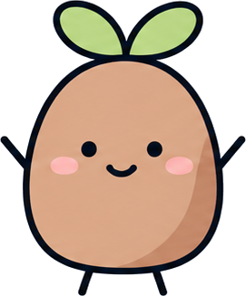
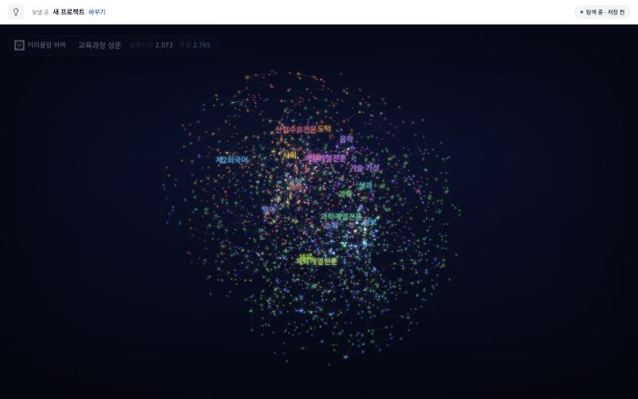
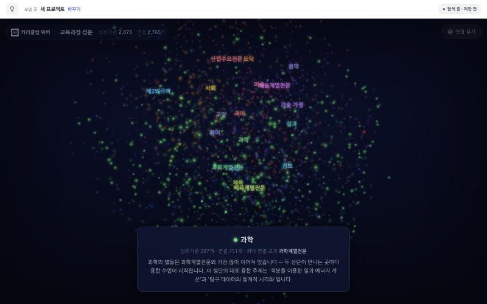
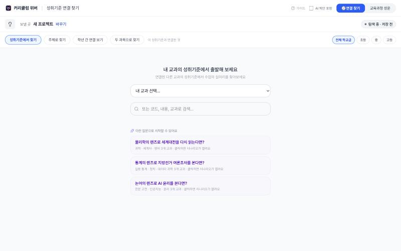

커리큘럼 위버



시연 2026. 11. 14. · 최종 점검 2026. 11. 10. · 오른쪽 위 [여기서 시연]으로 실제 화면과 함께 보기
화면 1 · 2분
교육과정 성운: 전체 모습 먼저

1
2
1
숫자 두 개왼쪽 위에 성취기준 2,073개, 연결 2,765개 표시. 교과군 사이를 잇는 연결만 모은 화면
2
끌어서 돌리기, 별 누르기별 하나가 성취기준 하나. 누르면 이어진 다른 교과 성취기준과 연결 근거 표시
말
2022 개정 교육과정 전체가 한 화면색은 교과군. 가까이 있는 별은 내용이 비슷한 성취기준
화면 1 · 교육과정 성운
화면 1 · 이어서
우주 여행: 교과군별 자동 안내

1
1
아래 설명 카드교과군마다 성취기준 수, 연결 수, 가장 많이 이어진 교과, 대표 융합 주제가 차례로 표시
2
시작 방법 두 가지성운 오른쪽 위 "우주 여행" 버튼, 또는 위 버튼의 주소(끝에 tour=1)
말
과학 한두 곳만 보고 넘어가기전체 여행은 길어 2분 안에 끝나지 않음. 두 교과군을 본 뒤 다음 탭으로 이동
화면 1 · 우주 여행
화면 2 · 1분 30초
연결 찾기: 내 교과에서 출발

1
2
3
1
내 교과 선택교과를 고르면 그 교과 성취기준과 이어진 다른 교과 성취기준 목록 표시
2
예시 질문 세 개"통계의 렌즈로 지방선거 여론조사를 본다면?"처럼 누르면 시나리오가 열리는 질문
3
찾는 방법 네 가지성취기준에서, 주제로, 학년 간 연결, 두 과목으로
말
성운은 감상, 여기는 설계고른 성취기준은 담아서 새 프로젝트로 보낼 수 있음
화면 2 · 연결 찾기
화면 3 · 2분 30초
실제 팀 기록: 보기 전용으로 열기
실제 화면은 시연 모드에서팀 기록과 계정 정보가 담긴 화면이라 캡처를 넣지 않았습니다
1
초록 띠 확인"보기 전용으로 열었습니다"가 있으면 절차를 눌러도 팀 진행 위치와 대화 기록이 그대로
2
절차 칩으로 둘러보기팀준비 → 분석 → 설계 → 개발/실행 → 평가. 왼쪽은 보드, 오른쪽은 팀 대화
3
대화 한 장면수업 이름 "세상의 모든 목소리"가 정해지는 대화. 국어, 영어, 음악 세 교과 팀
✕
[편집 화면으로] 누르지 않기누르면 보기 전용이 풀려 절차 이동이 실제 팀 기록에 남음
화면 3 · 실제 팀 기록
노란 띠 "앞 단계 내용이…"는 PR #220 반영 뒤 보기 전용에서 표시되지 않음
화면 4 · 1분 30초
결과 보고서: 보드가 한 문서로
실제 화면은 시연 모드에서팀 기록과 계정 정보가 담긴 화면이라 캡처를 넣지 않았습니다
1
헤더 "보고서" → 바로 보기세모목 화면 위쪽 보고서 버튼. 보기 전용에서도 열림
2
19/19 절차 완료5월 19일에 시작한 팀의 설계 전 과정
3
요약 숫자전체 대화 914건, 교사 메시지 431건, AI 응답 474건
!
표시까지 10초 안팎바로 보기를 누른 뒤 한동안 흰 화면. 시연 전에 미리 열어 둘 것
!
표의 빈칸8월 개정 전 양식으로 적은 팀이라 표 칸 일부가 비어 있음. 아래로 길게 내리지 않기
화면 4 · 결과 보고서
11/10 반영
이번에 달라진 화면 세 가지
실제 화면은 시연 모드에서팀 기록과 계정 정보가 담긴 화면이라 캡처를 넣지 않았습니다
1
가입 승인 대기 안내관리자에게만 표시. 대기 인원과 가장 긴 대기 일수, 승인 화면 버튼. 시연 전에 승인을 마치면 표시되지 않음
2
보기 전용 열람주소 끝 ?view=1 또는 프로젝트 헤더의 눈 아이콘
3
서버 연결 안내화면은 열렸는데 서버에 닿지 않으면 화면 아래에 붉은 안내 표시. 연결이 돌아오면 사라짐
!
이 화면은 시연에서 제외계정 이메일과 승인 대기 인원이 표시됨
11/10 반영 사항